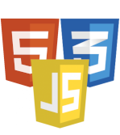

Portfolio para teste
Olá, me chamo Daniel Magno e estou iniciando na programação, fiz este Portfolio temporario para testar os conhecimentos adquiridos até agora.
Tecnologias estudadas nesse periodo
HTML5 e CSS3
Estou em fase de aprendizado nessas duas tecnologias, procurando estudar várias horas por dia, todos os dias.
Para aprender essas tecnologias, estou estudando pelo curso gratuito do Professor Gustavo Guanabara, o CursoEmVideo.
Tecnologias em fase de aprendizado
JavaScript e TypeScript
Como pretendo atuar no desenvolvimento web, o melhor seria usar a tecnologia em maior uso nessa área, é o caso do JavaScript e do TypeScript.